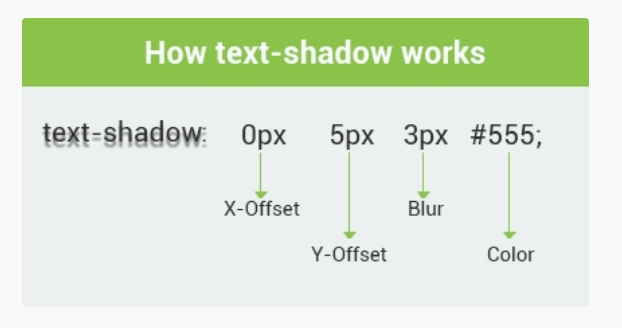

A rectangle can be turned into a circle using only CSS.
To create a circle, the border radius should be half of the height and the width.
The rectangle in the example below has a width and height of 200px. By setting the border radius to
100px, the corners will be rounded to form a circle:
The box-shadow Property
The CSS3 box-shadow property applies shadow to elements.
Components of the box-shadow property are decoded by browsers in the following manner:
- The first length for the horizontal offset will cast the shadow to the right of the box
(required)
- The second length is for the vertical offset that will cast the shadow to below the box
(required)
- The color of the shadow (optional)
In the example below, the horizontal and vertical offsets have been set to 10px:
Blur and Spread
Besides color, there are also two optional values for the box-shadow element, which are blur and
spread.
The blur and spread values should be used before the color value.
Negative Values
Negative values can also be used for the box-shadow property.
horizontal offset - the shadow will be to the left of the box vertical offset - the shadow will be above/top the box blur radius - negative values are not allowedspread radius - negative values will cause the shadow to shrinkFor example: This is the Negative value's box-shadow the text written!
Creating an Inner Shadow
The "inset" keyword allows to draw an inner shadow in the box. To show an inset shadow,
just add the inset keyword:
Note! You can simultaneously create inner and outer shadows by separating each
shadow with a comma.
Layering Multiple Shadows
You can define as many shadows for the same box as you want by writing all of them
comma-separated in the same rule.
In the example below, two inner shadows have been created by separating each shadow with a
comma.
In case we specify more than one value, the one which comes last will be positioned at the back of
all shadows.
Note! As expected, the blue shadow (#B0E0E6) comes last.
box-shadow: 10px 10px blue, 20px 20px red, 30px 30px yellow;
:
Before CSS3, transparent background images were used to create transparency effects. The new features of
CSS3 now make it easier to create transparency effects.
CSS supports color names, hexadecimal, and RGB colors.
In addition, CSS3 introduces the following:
RGBA Colors
RGBA color values are an extension of RGB color values with an alpha channel, which specifies the
opacity for a color.
An RGBA color value is specified with: rgba(red, green, blue, alpha). The alpha parameter is a
number
between 0.0 (fully transparent) and 1.0 (fully opaque).
HSL (Hue, Saturation, Lightness) Colors
An HSL color value is specified with: hsl(hue, saturation, lightness).
Hue is a degree on the color wheel ranging from 0 to 360
0 (or 360) is red, 120 is green, 240 is blue.
Saturation is a percentage value: 100% is the full color.
Lightness is also a percentage; 0% is dark (black) and 100% is white. HSLA color values are an
extension of HSL
color values with an alpha channel - which specifies the opacity for a color (just like RGBA).
In the example below, a transparent glass menu bar is created with CSS3.
In the HTML file, a <nav> tag containing an <ul> list with links has been added:
The text-shadow Property
The text-shadow property defines one or more comma-separated shadow effects, to be applied to the text
content of the current element.
The image below shows how the text-shadow property is applied:

Note! - The offset-x and offset-y values are required for the CSS text -shadow property.
- The color value is not required, but since the default for the text -shadow is transparent, the
text-shadow
will not appear unless you specify a color value.
The text-shadow Property
The text-shadow Property with blur effect
The text-shadow Property with more than one color seperated by comma,
Remember: Multiple Text Shadows
The text-shadow style can accept multiple values in a comma-separated list.
According to CSS2, the shadows are laid down in the order they appear, so if they overlap, the last one
that is specified should appear on top. CSS3 has now changed that so they are applied in reverse order.
To create multiple shadows, the shadows are separated with a comma.
Here is an example:
This example defines two text shadows at different locations, blur radius, and colors. This makes it
look like there are two different light sources on the text.
To make a text shadow look realistic, remember these few shadow characteristics:
- A shadow which is close to the text is normally not as blurred as a shadow that is far from the text.
A
shadow that is far from the text usually implies a light source which is also far from the text.
- A shadow which is close to the text usually implies that the underlying surface is close, that the
light
is close, or both. A close shadow is often darker than a distant shadow, because less light can get
in
between the shape and the underlying surface.
To remove a text-shadow, set the text-shadow property to none; no shadows will be associated with
that
element.
This text has two shadows
Working with Pseudo-Classes
The CSS pseudo-classes allow us to style elements, or parts of elements, that exist in the document tree
without using JavaScript or any other scripts. A pseudo-class starts with a ":" (colon).
The most commonly used pseudo-classes are :first-child and :last-child.
The :first-child pseudo-class matches an element that is the first child element of some other element.
In the following example, the selector matches any <p> element that is the first child of the div
element:
First paragraph
Second paragraph
Third paragraph
Fourth paragraph
The :last-child pseudo-class matches an element that is the last child element of some other element.
In the example below, the selector will match any <p>element that is the last child of the div
element:
First paragraph
Second paragraph
Third paragraph
Fourth paragraph
Working with Pseudo Elements
Pseudo elements are used to select specific parts of an element.
There are five pseudo elements in CSS, each starting with a double colon (::):
::first-line - the first line of the text in a selector ::first-letter - the first letter of the text in a selector ::selection - selects the portion of an element that is selected by a user ::before - inserts some content before an element ::after - inserts some content after an element
In the example below, the ::first-line pseudo element is used to style the first line of our
text:
The following example demonstrates how to use the ::first-line element to add special effect to the
first
line of elements in the document. special effect to the first
line of elements in the document. special effect to the first
line of elements in the document.
The following example demonstrates how to use the ::selection element to change the color of the
selected
text. to add special effect to the first
line of elements in the document.
special effect to the first line of elements in the document.
special effect to the first line of elements in the document.
This is a heading
The ::before pseudo-element inserts content before the content of an element.
This is a heading
The ::before pseudo-element inserts content before the content of an element.
This is a heading
You can insert text, images, and other resources using :before pseudo element.
You can insert text, images, and other resources using :before pseudo element.
You can insert text, images, and other resources using :before pseudo element.
You can insert text, images, and other resources using :before pseudo element.
You can insert text, images, and other resources using :before pseudo element.
You can insert text, images, and other resources using :before pseudo element.
pseudoElements-marker
Coffee
Tea
Milk
First
Second
Third
pseudoElements-first-letter
You can combine the ::first-letter and ::first-line pseudo-elements. To add a special effect to the
first letter and the first line of a text!
The word-wrap Property
The word-wrap property allows long words to be broken and wrapped into the next line. It takes two
values:
normal and break-word. In the example below, the word-wrap property is set to normal.
This paragraph has a long word:
thisisaverylongwordbutyoucantfinditinthedictionary.
Now let's see what happens when we use this same example and set the word-wrap property to break-word:
This paragraph has a long word:
thisisaverylongwordbutyoucantfinditinthedictionary.
Note! When the word-wrap property is set to break-word, the browser breaks a word when it is too long
to fit within its container.
The @font-face Rule
The @font-face rule allows custom fonts to be loaded into a webpage.
With the help of this rule, designs are no longer limited to the fonts that are installed on a user's computer.
In Internet Explorer 8 and earlier, the URL must point to an Embedded OpenType (eot) file, while Firefox,
Chrome, etc. support True Type Fonts (ttf) fonts and OpenType Fonts (otf).